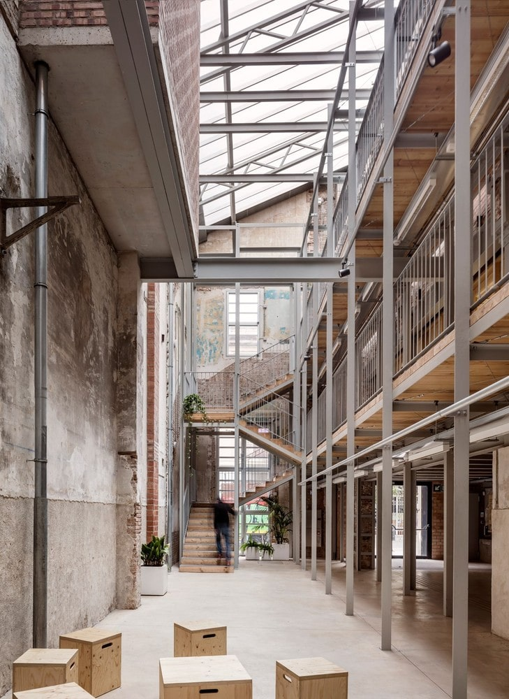

「建築結構與空間規劃」
該建築由三個結構體組成：主體位於 Olzinelles 街和 Altafulla 街上，內含兩個主要大廳（底層是舊商店，一樓是中庭）；中部結構體可從 Altafulla 街進入；以及內部結構體，呈L形，無法從街道進入。
其餘建築的衛生條件差，加上連接性不佳，促使設計師提出了一個大型的縱向空隙，通過從較公共到較私密的漸進序列，將這三個體量及其所有空間（新的和舊的）連接起來。這個空隙是透過完全拆除靠近 Olzinelles 街側防火牆的中心線而形成的，變成了一條室內街道，並在第二個結構體中透過擴大現有的採光井來加以強調。最後，在最後一個結構體後面，一個與前兩個體量空隙相連的三層空間為整個序列畫上了句號。
這一連串的空隙構成了一個中庭，其邊界是「新」立面，與現有的防火牆相對，防火牆上留有建築歷史的痕跡。中庭為所有空間帶來光線和空氣，成為水平和垂直交通的軸線，並為未預見的用途提供了新的潛力。
「屋頂與中庭設計」
現有的屋頂無法使用，因此只保留了主廳的桁架。整個建築上方新建了屋頂，在體積上與三個結構體相關聯：三個山牆屋頂，南側為蜂窩聚碳酸酯，北側為絕緣金屬板，架設在金屬結構之上，照亮並通風中庭，在最高角落設有窗戶，以利於自然對流。
中庭受到 Lina Bo Bardi 的 Oficina 劇院啟發，是一個生物氣候調節的過渡空間，通過一系列棧道和樓梯組織所有交通動線，這些元素喚起了建築工地鷹架的形象。建築主要透過基於慣性和絕緣的被動策略來實現熱性能；三個輕質屋頂則實現自然採光並利於通風。
「可持續性與熱性能」
透過增加屋頂的體積，可以增加太陽熱能獲取：在冬季，熱量透過熱能回收系統收集，用於室內空間；在夏季，中庭頂部的空氣被重新加熱，迫使對流發生，通過自動感測器啟動的屋脊窗戶打開，釋放熱空氣。
在冬季，氣候控制的空間會釋放暖空氣，以調節中庭的溫度；在第三個結構體中，由於輻射過多，一個設有遮陽過濾網的通風腔在冬夏兩季都能優化太陽能的獲取。